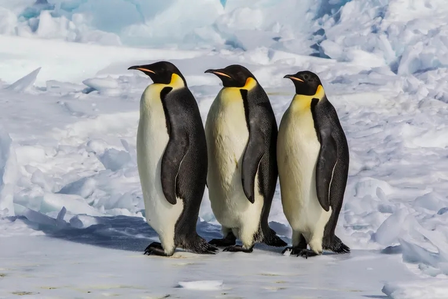

Los 3 datos del pingüino emperador, uno de los más populares del planeta
Estos seres vivos tienen la capacidad de resistir temperaturas muy bajas y caminar durante kilómetros en superficies heladas.
FOTOGRAFÍA DE WILLIAM LINK USGS
POR REDACCIÓN NATIONAL GEOGRAPHIC
PUBLICADO 24 ABR 2024, 17:01
GMT-3
Los pingüinos emperador habitan únicamente en la Antártida y pasan gran parte del tiempo en áreas de hielo. Los pingüinos son aves marinas no voladoras, de las cuales se conocen un total de 18 especies diferentes, menciona una ficha informativa de National Geographic España. Entre ellas, se encuentra el popular pingüino emperador (Aptenodytes forsteri).
El Día Mundial del Pingüino, que tiene lugar anualmente el 25 de abril, es una ocasión especial perfecta para descubrir más sobre esta especie. Por eso, National Geographic hizo una selección de 3 particularidades de Aptenodytes forsteri. Descúbrelas a continuación.
1. El emperador es la especie de pingüinos más grande del mundo
Con una altura que ronda entre los 112 y los 115 centímetros y un peso de 22 a 40 kilogramos, esta es la especie más alta y pesada de pingüinos vivos, asegura Global Penguin Society (GPS), una organización reconocida internacionalmente por la conservación de las especies de pingüinos en el mundo.
A nivel corporal, los machos son ligeramente más grandes que las hembras, pero se asemejan en plumaje. Ambos tienen la cabeza de color negra, vientre blanco, pecho de color amarillo pálido y manchas auriculares (zona de la oreja) amarillas brillantes, agrega GPS.
Al nacer, los ejemplares de Aptenodytes forsteri no tienen plumas, su pelaje es gris y pesan apenas 315 gramos. Las primeras plumas grises aparecen después de semanas de su nacimiento, explica Animal Diversity Web (ADW), una base de datos en línea sobre historia natural de la Universidad de Michigan (Estados Unidos).
FOTOGRAFÍA DE PAUL NICKLEN
A nivel corporal, los machos son ligeramente más grandes que las hembras. En la imagen se observa un trío de pingüinos emperador en el helado Mar de Ross. Antártida.
2. Los pingüinos emperador tienen un hogar muy exclusivo
Estos ejemplares habitan únicamente en la Antártida, indica ADW. Allí, las temperaturas invernales oscilan entre -40° y 0° Celsius, con una sensación térmica que alcanza los -60°C.
Es la única especie que se reproduce en el invierno antártico, época en la que puede trasladarse entre 50 y 120 kilómetros sobre el hielo para llegar a su colonia de reproducción, donde llegan a encontrarse miles de pingüinos, señala GPS.
Durante la temporada de reproducción, las colonias de pingüinos se desplazan a las plataformas de hielo. En esos sitios, los acantilados y icebergs les sirven de protección contra los vientos cruzados.
Acabada la época de procreación, pasan gran parte del tiempo en áreas de hielo que se encuentran estacionalmente llenas. Esos sitios, cercanos al mar abierto, les permiten acceder fácilmente al alimento, completa Animal Diversity Web.
3. Mientras las hembras buscan comida, los machos de pingüino emperador incuban los huevos
Los pingüinos emperador son animales ovíparos y tienen un período de incubación que puede durar entre 33 y 62 días, explica un artículo de National Geographic España. Además, detalla GPS, estas aves llegan a la colonia en los meses de marzo-abril, mientras que las hembras ponen un solo huevo entre mayo y junio.
Un dato destacado es que las hembras no incuban los huevos, sino que lo hacen los machos, quienes permanecen de pie durante 62 días con el huevo dentro de la bolsa de cría (una bolsa abdominal) hasta conseguir su objetivo. En ese período, las hembras van al mar para alimentarse.
Tal como menciona el Consejo Nacional de Investigaciones Científicas y Técnicas (Conicet) de Argentina, durante la ausencia de sus parejas, los machos se mantienen en ayuno, lo que puede provocar que pierdan hasta la mitad de su peso corporal.
Cuando nacen las crías, entre finales de julio y comienzos de agosto, las hembras retornan y relevan a los machos, quienes, agrega Conicet, se van al mar abierto para alimentarse y recuperar las energías gastadas en el ayuno.
Luego, los padres se turnan para ir a buscar alimentos y cuidar al polluelo, concluye Global Penguin Society.